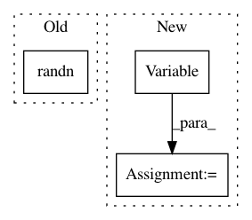

2142ed914163bbcd52c9f7aa838059e5263fc718,ch07/lib/dqn_model.py,NoisyFactorizedLinear,forward,#NoisyFactorizedLinear#Any#,49
Before Change
torch.randn(self.epsilon_output.size(), out=self.epsilon_output)
bias = self.bias
if bias is not None:
torch.randn(self.epsilon_bias.size(), out=self.epsilon_bias)
bias = bias + self.sigma_bias * Variable(self.epsilon_bias, requires_grad=False)
noise_v = Variable(torch.mul(self.epsilon_input, self.epsilon_output), requires_grad=False)
return F.linear(input, self.weight + self.sigma_weight * noise_v, bias)
After Change
bias = self.bias
if bias is not None:
bias = bias + self.sigma_bias * Variable(eps_out.t(), requires_grad=False)
noise_v = Variable(torch.mul(eps_in, eps_out), requires_grad=False)
return F.linear(input, self.weight + self.sigma_weight * noise_v, bias)
class DQN(nn.Module):
In pattern: SUPERPATTERN
Frequency: 3
Non-data size: 3
Instances
Project Name: PacktPublishing/Deep-Reinforcement-Learning-Hands-On
Commit Name: 2142ed914163bbcd52c9f7aa838059e5263fc718
Time: 2017-10-28
Author: max.lapan@gmail.com
File Name: ch07/lib/dqn_model.py
Class Name: NoisyFactorizedLinear
Method Name: forward
Project Name: sony/nnabla
Commit Name: 0940b083d3cdd0db46c867523e9a58b196e6e9d5
Time: 2019-01-09
Author: takuma.seno@gmail.com
File Name: python/test/function/test_assign.py
Class Name:
Method Name: test_assign_forward_backward
Project Name: opencv/opencv_extra
Commit Name: 191e716d801665bab599ca81d3d7ef10445fcdbd
Time: 2020-02-15
Author: gdp.1807@gmail.com
File Name: testdata/dnn/onnx/generate_onnx_models.py
Class Name:
Method Name: